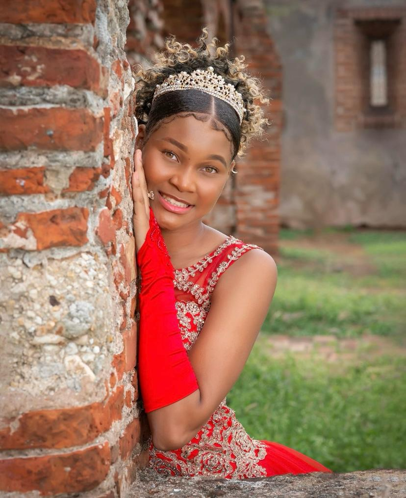

Mi autobiografía.

Mi fecha nacimiento es el 29 de junio de 2009, mi infancia fue cuando estaba de meses , yo era bastante curiosa, agarré y me entré en un tanque lleno de agua, creyendo que era una sirena estaba en una guardería llamada fe y y alegría. Mis padres trabajaban mucho para darme un buen futuro. Soy la primogénita de mis padres a los siete años nació mi hermana llamada Leonelys. Después llego mi hermano llamado Manuel tiempos más adelante se incluyó en la familia mi hermana pequeña Anayenlis, estudio en un politécnico llamado Hermana Rosario Torres fe y alegría estoy en cuarto de secundaria. Soy de la técnica desarrollo y administración de aplicaciones. Mis pasatiempos favoritos son leer, escuchar música, comer y dormir me gusta aprender nuevas cosas me gustaría estudiar en un futuro criminología o espía de inteligencia, ser millonaria me gustaría ayudar a los indigentes darle un hogar y darle de qué comer actualmente vivo con mi madre y mis hermanos, ya que mi padre se encuentra fuera del país.